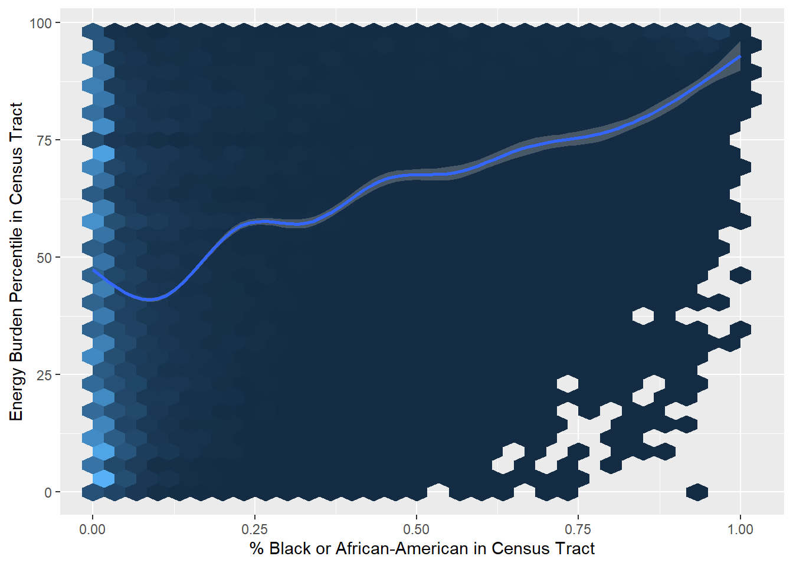

# Import tidyverse
library(tidyverse)
# Load CEJS data and create a new dataframe called 'df_raw'
filename <- "../data/1.0-communities.csv"
df_raw <- read_csv(filename)Sustainability Trends Among Disadvantaged Communities
Exploring the Climate and Economic Justice Screening Tool (CEJST) Data
Overview
As climate change continues to impact the world in which we live, numerous initiatives have been started to better understand the influence it has on individuals and communities. One of those initiatives stems directly from an Executive Order (EO) issued by President Joe Biden in January 2021. The EO resulted in the Council on Environmental Quality creating a tool by which the public can track various burdens across a number of communities. The primary aim of the tool is identify and subsequently help communities disadvantaged by these burdens in government social programs.
The Climate and Economic Justice Screening Tool (CEJST) is the result of the EO. While the tool established by the Council on Environmental Quality covers a number of burdens (health, transportation, and workforce development, for example), this activity will focus on the sustainability aspects of the tool, including climate change, energy, and legacy pollution burdens on communities.
To set the stage for this activity, we are going to use the CEJST data to explore whether there is a relationship between the energy burden percentile in census tracts and the share of population of Blacks or African-Americans in census tracts. Below, we will explore the dataset, as well as our variables of interest, in-depth.
Dataset
The data used for this analysis comes from the CEJS website. The columns (“variables”) we are most interested in for better understanding these data are:
- The energy burden percentile, which captures the percentile of energy cost as well as energy-related pollution within a census tract.
- The percent of African-American or Black alone, which captures the percent of African-American or Black individuals in a census tract.
First, we will load our data and clean up the variable names using the various packages available to us in the tidyverse.
# Take a look at the first few rows of data
head(df_raw)# A tibble: 6 × 133
`Census tract 2010 ID` `County Name` `State/Territory` Percent Black or Afr…¹
<chr> <chr> <chr> <dbl>
1 01001020100 Autauga County Alabama 0.07
2 01001020200 Autauga County Alabama 0.57
3 01001020300 Autauga County Alabama 0.24
4 01001020400 Autauga County Alabama 0.05
5 01001020500 Autauga County Alabama 0.18
6 01001020600 Autauga County Alabama 0.18
# ℹ abbreviated name: ¹`Percent Black or African American alone`
# ℹ 129 more variables: `Percent American Indian / Alaska Native` <dbl>,
# `Percent Asian` <dbl>, `Percent Native Hawaiian or Pacific` <dbl>,
# `Percent two or more races` <dbl>, `Percent White` <dbl>,
# `Percent Hispanic or Latino` <dbl>, `Percent other races` <dbl>,
# `Percent age under 10` <dbl>, `Percent age 10 to 64` <dbl>,
# `Percent age over 64` <dbl>, `Total threshold criteria exceeded` <dbl>, …Upon first glance, we can see the column names may need to be changed because there are spaces, slashes, etc. in them. Once we have the data loaded, we can use the janitor package to clean up the names of our columns so they are easier to read and use in our analyses.
# Create a new dataframe called 'df_data' with new column names
df_data <-
df_raw %>%
janitor::clean_names()
# Take a look at the updated data
glimpse(df_data)
# Check out new column names only
colnames(df_data)You will notice that we have eliminated spaces and other formats so our columns are now easier to work with. We will focus on a few columns in this dataset:
census_tract_2010_id: Each row in this dataset corresponds to a census tract; this is a small geographic region of the U.S. chosen to represent a consistent number of persons. Census tracts contain about 4000 people, though may contain as few as 1200 and as many as 8000 people.percent_black_or_african_american_alone: This reports the percent of people in the census tract who are Black or African American.energy_burden_percentile: This reports the percentile of energy burden for each census tract. Energy burden is computed as the average annual cost of energy divided by the average household income within the census tract—this is a measure of how “burdened” a household is by energy expenses. A larger energy burden means a household needs to spend more of its income on energy bills.- The percentile is then computed as the ordering of energy burden values for each census tract: The 0th percentile corresponds to the smallest value of energy burden, while the 100th percentile corresponds to the largest value of energy burden.
Next, let’s conduct EDA to better understand our variables of interest, energy_burden_percentile and percent_black_or_african_american_alone.
Exploratory Data Analysis (EDA)
To begin, let’s subset our data so we can get our descriptive statistics for our variables of interest.
# Subset full dataframe
df_small <-
df_data %>%
select(energy_burden_percentile, percent_black_or_african_american_alone)
# Take a look at the subset of data
glimpse(df_small)Rows: 74,134
Columns: 2
$ energy_burden_percentile <dbl> 49, 6, 68, 63, 38, 57, 72, 46,…
$ percent_black_or_african_american_alone <dbl> 0.07, 0.57, 0.24, 0.05, 0.18, …Let’s use this subset to get our measures of spread and central tendency.
summary(df_small) energy_burden_percentile percent_black_or_african_american_alone
Min. : 0.00 Min. :0.0000
1st Qu.: 24.00 1st Qu.:0.0100
Median : 49.00 Median :0.0400
Mean : 49.55 Mean :0.1341
3rd Qu.: 75.00 3rd Qu.:0.1500
Max. :100.00 Max. :1.0000
NA's :1054 NA's :745 Next, we can plot the percent of Black or African-Americans against the energy burden percentile to see if there is a negative or positive trend between the two variables.
# Plot relationship
p <- df_small %>%
ggplot(aes(
percent_black_or_african_american_alone,
energy_burden_percentile
)) +
geom_hex() +
xlab("% Black or African-American in Census Tract") +
ylab("Energy Burden Percentile in Census Tract") +
geom_smooth()
# Remove legend
p + theme(legend.position = "none") 
As the figure shows, there is a positive relationship between the percent of Black or African-Americans living in a census tract and the energy burden percentile in the respective census tract.
Next Steps
We now have a better understanding of sustainability trends among disadvantaged communities using just a few of the variables in the CEJST dataset. Specifically, we explored the relationship between the percent of Black or African-Americans living in a census tract and the energy burden percentile in the census tract. Our high-level exploratory data analysis uncovered a positive relationship: Black or African-Americans that live in a census tract appear to experience a higher energy burden.
With this information in hand, we will use these data, as well as other variables in the CEJST dataset, to formulate hypotheses. We will test our hypotheses in both a frequentist and Bayesian framework, comparing the application of both approaches across the different stages of our analysis with the end goal being general inference. Let’s take a look at the Introductory Discussion for our activity to learn more.